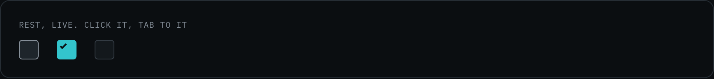
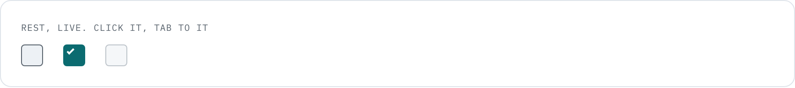
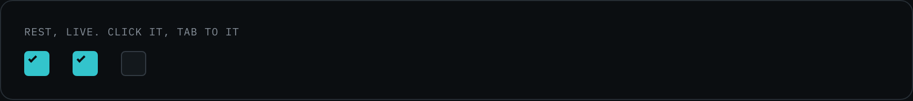
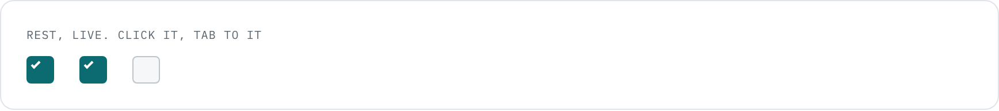

Checkbox
Twenty-four pixels, and that number is a named exception rather than an oversight: a 44px checkbox would double the height of every row in a ranked list, and the ranked list is the screen this product exists for.
design/system/components/checkbox.css · 2.0 Synthesis and 7.2 Data and privacy. 11 occurrences.
Anatomy
| Zone | Class or element | Rule |
|---|---|---|
| the box | .check | 24px, the AA floor for this control. One of three named exceptions to the 44px rule, all listed in wireframes/docs/conventions.md |
| the mark | .check:checked::after | Drawn from --text-on-action, the role that exists so a theme cannot lighten the page and the mark together |
| the label | a wrapping <label> | On 7.2 the WHOLE ROW is the label, which is correct and is why the row has no separate hit target |
Variants
| Axis | Values | The rule that chooses |
|---|---|---|
| state | unchecked 7 · checked 4 | The only axis. There is no size, no emphasis and no content variant |
| no other axis | A checkbox that came in two sizes would be two answers to one question. Where a denser control was needed, the answer was a chip, not a smaller box |
When to use it
Two places, and they are opposite in weight. On 2.0 it selects themes for a brief, where it is the quiet start of the product's main job and the reason the selection bar exists. On 7.2 it carries a compliance promise: PII scrubbing is on by default, and the checkbox is how the product SHOWS that rather than claiming it in a paragraph.
That second use is why the checked state takes the accent. A default that matters is worth seeing from across the screen.
Rule and anti-rule
The whole row is the label, so the target is the row and the state is legible without reading the box.
A bare "Enable" with no object. The person has to look elsewhere to learn what they are enabling, and a screen reader announces a checkbox named "Enable".
| If you are about to | Take instead | Why |
|---|---|---|
| offer one of several options | a radio, which this product does not have | If it ever needs one, it is a new component with its own page, not a checkbox with a round corner |
| switch something on immediately | a toggle, which this product does not have | A checkbox is part of a form and commits with the form. On 7.2 the settings are saved by a button, which is why a checkbox is right there |
| select a row in a list where 44px is available | the same checkbox | The exception is the row height, not the taste. Where the row can afford 44, use 44 |
States
| State | Token | What moves |
|---|---|---|
| hover | --line-hover | The border brightens |
| checked | --bg-action plus --text-on-action | The one place besides the primary action where the accent becomes a fill |
| focus-visible | --line-focus | The product ring, offset 2px so it clears the 24px box |
| disabled | --opacity-disabled | Dimmed, never repainted |




Four snapshots. Checked and disabled are visible in the live row above at rest, so photographing them again would be an occurrence rather than a difference.
Re-take: node scripts/shoot-states.js checkbox
The file and the tokens
| Reads | Grows from | For |
|---|---|---|
--bg-raised | --grey-850, plate B pixel | the unchecked ground, a step above the row |
--bg-action | --cyan-400 | the checked fill |
--text-on-action | --grey-950 dark, --grey-000 light | the mark itself |
--line-control | --grey-600 | the box boundary |
<input class="check" type="checkbox"> <label class="acct-row"><input class="check" type="checkbox" checked> ... </label>
Stands on: 2.0 Synthesis, 7.2 Data and privacy, 3.2 Import a CSV